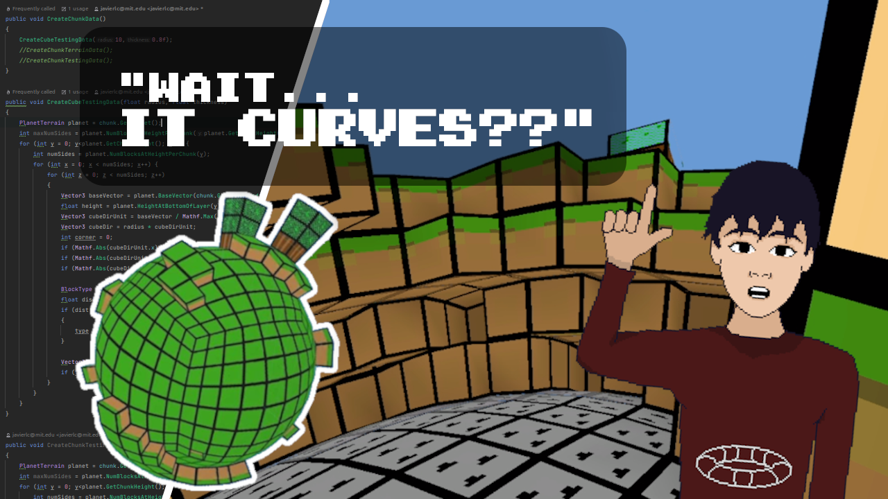
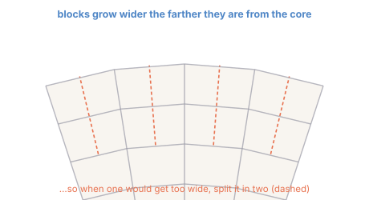

Remaking Minecraft on a sphere (and then making a cube)
Everyone gives the same advice to first-time game developers: don't start with your dream game. Start small. Don't overthink it. So naturally, I ignored all of it, and spent six months building my dream game from scratch with no prior experience, because I figured I'd be the exception. Well — too late now. Welcome to devlog 1.
Here's the pitch. I really like Minecraft, and let's be honest, so do you. But you know the two worst things in Minecraft? Circles and spheres. They come out pointy and terrible, and if you've ever tried to build one by hand you know the pain. Plenty of people have tried to fix this from inside the game with command blocks and armor stands — but those circles are useless. You can't touch them, mine them, or stand on them. They just sit there.
So I solved it the other way around. For the last few months I've been building a Minecraft clone from scratch in Unity, with one twist: the world isn't flat, it's a sphere — a whole planet made of voxels. In my game, a perfect circle is just... a thing you can walk on. Take that, Mojang.

If you'd rather watch the whole thing in motion — the planet, the mining, the moon, the cursed cube at the end — the video lives here:
1How do you make a sphere out of cubes?
Hold on — how can a sphere be made of cubes? Good question. The honest answer is that these voxels aren't really cubes. Each one carries a small amount of distortion, and that distortion is exactly what lets them tile a sphere perfectly. For my fellow nerds, here's how it actually works. (If you don't care about the geometry, skip to the next section.)
You start with a cube and divide each face into a grid of squares. Then you inflate the cube into a sphere: every point gets pushed out to a fixed distance from the centre. The simplest version is just normalising each point and scaling it to the planet radius $R$,
$$\mathbf{p} \;\longmapsto\; R\,\frac{\mathbf{p}}{\lVert \mathbf{p}\rVert},$$which turns the six flat grids of the cube into six curved patches that stitch together into a full sphere (do it slightly more cleverly — the "spherified cube" — and the cells come out more even). Do this for every layer of the planet, connect the square tiles between consecutive layers, and you get solid voxels.
There's a catch. The further a block is from the centre, the wider it gets — a cell's real width grows with its radius, so blocks near the surface balloon while blocks near the core stay tiny, which looks terrible. My fix: whenever a block would get wider than about two metres, I split it into smaller blocks. Near the core, coarse blocks; near the surface, finer ones. Same apparent size everywhere.

2The hard part: a chunking system on a sphere
Your computer can only do so many calculations per second. Ask it to render an entire planet of blocks at once and it simply dies. So, like Minecraft, the world is divided into chunks that load and unload as you move — a chunking system, an absolutely necessary part of any voxel game.
On a sphere, chunking has its own special headaches. There are broadly three problems:
- How you store the data for each chunk.
- How you find a block's neighbours — you only want to render block faces that touch air, since those are the only ones a player can ever see.
- How you find the block closest to a given point — essential for mining and building, where you fire a raycast from the player's hand and need to turn the hit coordinates back into "which block is this, and where is it stored?"
In flat Minecraft these are easy. Store each chunk as a 3D array, keep the chunks in a dictionary indexed by coordinates; a block's neighbours are just $\pm 1$ on the local coordinates; and the nearest block to a point is just rounding to the nearest integer. Done.
On the sphere, everything gets trickier — because the world is really six deformed grids wrapped into a ball. I give every block four coordinates: $(\text{side}, x, y, z)$.
- side — which of the original cube's six faces the block belongs to (an integer $0$–$5$).
- y — the height, i.e. which layer of the planet the block sits in.
- x, z — the block's position within that side.
The subtle bit: to define $x$ and $z$ on a face you have to pick where $(0,0)$ is and which way each axis increases, separately for each of the six sides — and then religiously respect that choice for the rest of development. The trouble shows up at the seams: a block on the edge of one side has a neighbour that lives on a different side, so finding its coordinates is no longer "add one." The same awkwardness hits problem #3 — turning a world-space point into the nearest block's local coordinates is genuinely fiddly when you're straddling two faces of the cube.
3A quick tour of the features
With the geometry working, I went feature-crazy. A speed-run of what's in there:
- Visuals. Block textures (I shamelessly borrowed Minecraft's for a while), then a gorgeous realistic atmosphere shader adapted from one of Sebastian Lague's videos — which I ended up rolling back to the minimalist textures I'd drawn in three minutes on day one. Then ambient occlusion, the single coolest feature of any voxel engine. Look at it. Beautiful.
- Core gameplay. Mining, building, and a very simple UI.
- World. A basic biome manager, a procedural cave system, and — because why not — a moon.
- The unglamorous stuff. A save system (a game you can't save would, in fact, suck), and local multiplayer so you can explore with friends — very much a work in progress.
4OK but can I make a cube?
After all that, a cursed thought arrived. In normal Minecraft you approximate a sphere out of blocks. So in my game, where the blocks are themselves slightly curved, I should be able to approximate a cube out of my deformed voxels. I was very curious how that would look (and, to be honest, I also wanted to feed the algorithm a catchy title). So: here it is, a cube inside spherical Minecraft. Cool cool cool cool cool.
5Why on earth am I doing this?
Very good question. I started this because it's kind of my dream game. The original — naive — vision was an Outer-Wilds-style space-exploration game where every planet is fully editable with a voxel engine: a handful of hand-crafted worlds, structures and NPCs, a universe full of things to discover with your friends.
After these months of work I've accepted that this is not a realistic scope for a solo hobbyist. But I genuinely loved building it, and I learned a frankly absurd amount of computational geometry along the way. If you want to know more about how any of it works, ask — I'll answer anything. And if you'd like to actually play it, I'll put out a demo once the video hits 200 likes, so, you know what to do.
Thanks for reading, and have a good day. — Nerdsniped